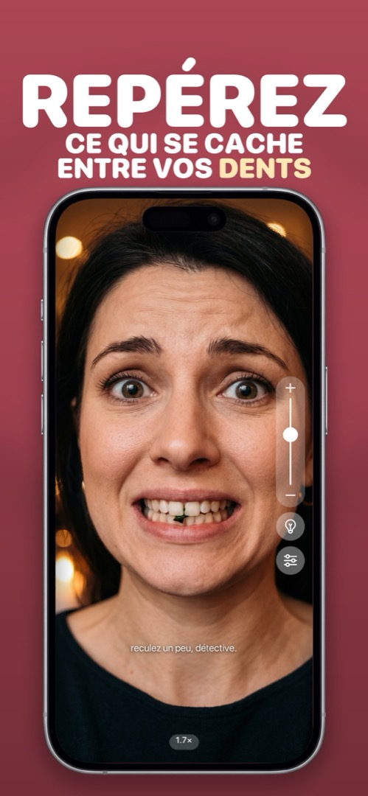

L’application miroir pour iPhone qui se comporte vraiment comme un miroir
Un miroir de téléphone plein écran avec anneau lumineux, zoom et luminosité maximale. Vérifiez vos cheveux, votre maquillage et vos dents avant que les autres ne le fassent.
Rien à voir avec la recopie d’écran — un vrai miroir grâce à votre caméra frontale.

Le miroir de poche que vous n’oublierez jamais à la maison
Essai gratuit sur iPhone. S’ouvre directement en miroir — sans inscription, sans menus.
Un miroir avec lumière, zoom — et des opinions
Tout ce que fait un poudrier, plus ce qu’il ne peut pas faire.
Vérifiez avant que les autres le fassent
Plein écran, toujours en miroir, luminosité au maximum. Cheveux, col, dents — dix secondes.

Voyez-vous même dans le noir
Touchez l’ampoule et les bords de l’écran deviennent un anneau lumineux. Voiture, salle de bain sombre, chambre d’hôtel à 6 h.

Repérez ce qui se cache entre vos dents
Pincez ou glissez pour zoomer. Épinard, graine de pavot, poil de sourcil rebelle — rien n’échappe à 2×.

Laissez votre miroir vous juger
Il lit votre expression et vous répond. « d’accord, ce petit sourire satisfait. » Désactivable quand vous voulez la paix.
Ouvrir. Regarder. Fermer. C’est toute l’application.
Ouvrez Mirrorly
La caméra frontale s’allume instantanément, en plein écran et en miroir comme une glace. La luminosité passe d’elle-même au maximum.
Touchez l’ampoule s’il fait sombre
Le bord de l’écran devient un anneau lumineux — chaud ou froid, à votre choix. Mirrorly vous prévient même quand la lumière est mauvaise.
Zoomez sur les détails
Glissez le curseur ou pincez pour agrandir dents, sourcils et lentilles. Placez les commandes du côté que préfère votre pouce.
Fermez et partez
Rien n’a été photographié, enregistré ni envoyé. Attendez-vous quand même à un commentaire du miroir en partant.
Tout ce qu’on se demande sur le téléphone utilisé comme miroir
D’abord la vraie réponse, puis comment faire dans Mirrorly.
Comment utiliser son iPhone comme miroir
Trois méthodes classées : l’écran éteint, l’app Appareil photo et une vraie application miroir.
Lire le guide → QuestionL’iPhone a-t-il une application miroir intégrée ?
Non — et pourquoi Appareil photo, FaceTime et Loupe ne comptent pas vraiment.
Lire le guide → ExplicationPourquoi la caméra frontale de votre iPhone inverse-t-elle votre visage ?
L’aperçu est en miroir, le selfie enregistré non. Ce qui se passe et le réglage qui change ça.
Lire le guide → FonctionnalitéUne application miroir avec lumière — pour les voitures sombres, les salles de bain mal éclairées et les fins de soirée
Pourquoi la lampe torche ne sert à rien avec la caméra frontale, et comment l’écran devient un anneau lumineux.
Lire le guide → FonctionnalitéUne application miroir avec zoom pour les sourcils, les dents, les lentilles et les petits détails
Sourcils, lentilles, dents — jusqu’où pousser le grossissement et comment garder une image nette.
Lire le guide → TutorielComment vérifier qu’on n’a rien entre les dents quand il n’y a pas de miroir
Passage de langue, gorgée d’eau, ou la méthode fiable en dix secondes avec le téléphone.
Lire le guide → TutorielComment vérifier son apparence avant une réunion (en moins de 10 secondes)
La check-list de 10 secondes — cheveux, visage, dents, lunettes, col, épaules — depuis votre bureau ou le parking.
Lire le guide → MaquillageL’application miroir de maquillage pour vos retouches partout
Lumière frontale, couleur réglable, grossissement, mains libres — ce qu’il faut à un miroir de maquillage et comment l’obtenir d’un téléphone.
Lire le guide → SituationMiroir de poche oublié ? Utilisez celui qui est déjà dans votre poche
Les miroirs improvisés classés du désespéré au bon — et celui que vous avez déjà sur vous.
Lire le guide → ConfidentialitéUne application miroir est-elle sûre ? Ce qu’il faut vérifier avant d’installer
Autorisations et signaux d’alerte à vérifier pour toute application caméra — et ce que Mirrorly fait exactement de la vôtre.
Lire le guide → PersonnalitéL’application miroir drôle qui vous juge (avec tendresse)
« doucement, l’inspecteur. » Le miroir qui a des opinions — et pourquoi l’analyse du visage reste sur votre téléphone.
Lire le guide →Les questions qu’on se pose avant d’installer une application miroir
Mirrorly est-il gratuit ?
Mirrorly est gratuit à télécharger et à essayer : vos trois premières vérifications ne coûtent rien. Ensuite, un achat unique le débloque à vie — sans abonnement, et sans publicité dans tous les cas.
En savoir plus →L’iPhone a-t-il une application miroir intégrée ?
Non. iOS n’a pas d’application miroir. La plupart des gens utilisent l’app Appareil photo, mais elle est faite pour prendre des photos : le déclencheur est sous le pouce, la luminosité n’est pas au maximum et il n’y a pas de lumière frontale. Mirrorly transforme la caméra frontale en vrai miroir.
En savoir plus →Mirrorly enregistre-t-il ou envoie-t-il mes photos ?
Non. Mirrorly n’a pas de déclencheur et ne capture, ne stocke ni n’envoie jamais de photos, de vidéos, d’images de la caméra ou de données faciales. Le flux de la caméra et l’analyse d’expression restent sur votre iPhone. Il n’y a pas de compte non plus.
En savoir plus →Mirrorly fonctionne-t-il dans le noir ?
Oui. Touchez l’ampoule et les bords de l’écran deviennent un anneau lumineux à luminosité maximale — pratique en voiture la nuit, dans une salle de bain sombre ou une chambre d’hôtel. Vous pouvez régler sa température, et Mirrorly vous suggère la lumière quand il détecte un mauvais éclairage.
En savoir plus →Puis-je zoomer pour vérifier mes dents ou mes sourcils ?
Oui. Glissez le curseur de zoom ou pincez l’écran pour agrandir. Environ 2× suffit pour repérer un reste de nourriture entre les dents, poser une lentille ou épiler un poil rebelle.
En savoir plus →Est-ce la même chose que la recopie d’écran ?
Non. La recopie d’écran (AirPlay) envoie l’affichage de votre iPhone vers une télé. Mirrorly est un miroir : il montre votre visage via la caméra frontale, comme une glace.
En savoir plus →Pourquoi ai-je l’air différent dans Mirrorly et sur mes selfies ?
Mirrorly vous montre toujours en miroir, comme une vraie glace — la version de votre visage à laquelle vous êtes habitué. Les selfies sont enregistrés sans inversion, tels que les autres vous voient, d’où cette impression que les photos sont légèrement « à côté ».
En savoir plus →Pourquoi le miroir me parle-t-il ?
C’est la personnalité de Mirrorly. Une analyse d’expression sur l’appareil lit votre visage et répond par une réplique pince-sans-rire comme « ok, pose de diva. » ou « recule, détective des pores. » Les Réactions du miroir se désactivent dans les réglages. Rien de votre visage ne quitte le téléphone.
En savoir plus →Mirrorly existe-t-il sur Android ?
Non. Mirrorly est une application iOS pour iPhone, disponible sur l’App Store en français, anglais, allemand, espagnol, italien, japonais et chinois simplifié.
En savoir plus →Reflétez votre confiance
Une vérification rapide et facile de votre apparence, sur votre téléphone. Essai gratuit sur l’App Store.
Télécharger Mirrorly